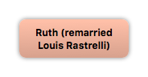

Home
Home
 Persons
Persons
 Families
Families
 Sources
Sources
 Statistics
Statistics
Ruth (remarried Louis Rastrelli)

Context

Parents
| Father | Date of Birth | Mother | Date of Birth |
|---|
Partners & Children
| Partners | Date of Birth | Children |
|---|---|---|
|
Vivian Mabel Baker
|
Events
Facts
Media
Note
Sources
Kinships
| Name | Degree of Kinship | Date of Birth | Place of Birth | Date of Death | Place of Death |
|---|---|---|---|---|---|
| Children | |||||
| Daughter | 4 Sep 1920 | Chicago, Cook, Illinois | |||
| Grandchildren | |||||
| Grandson | |||||
| Great grandchildren | |||||
| Great grandson | |||||